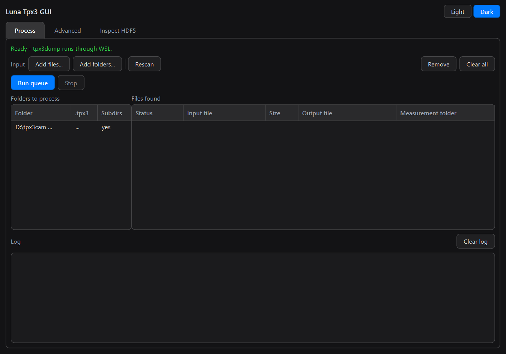
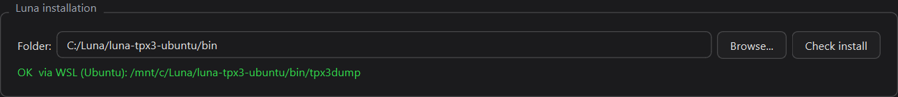
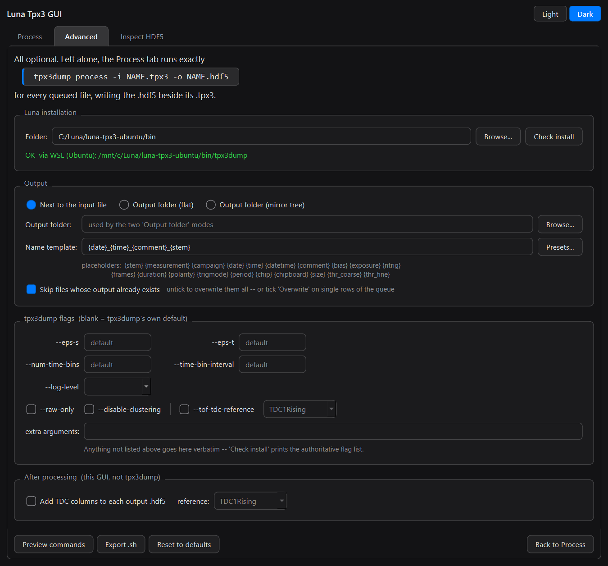
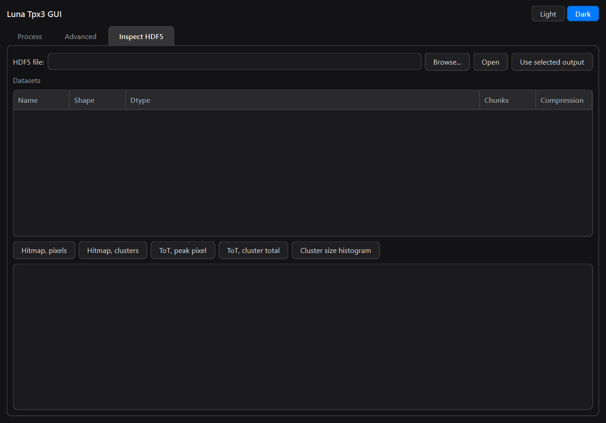
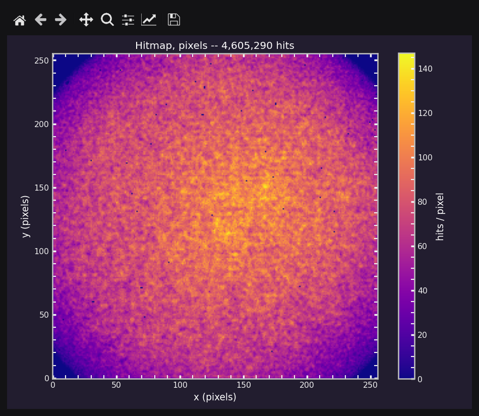
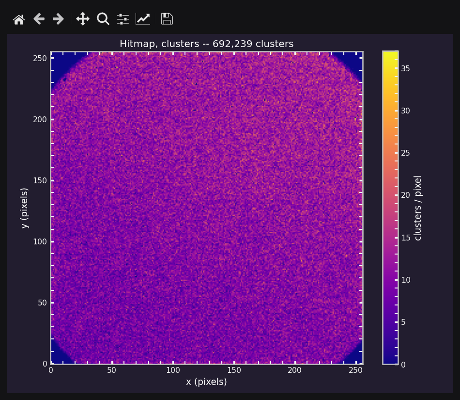
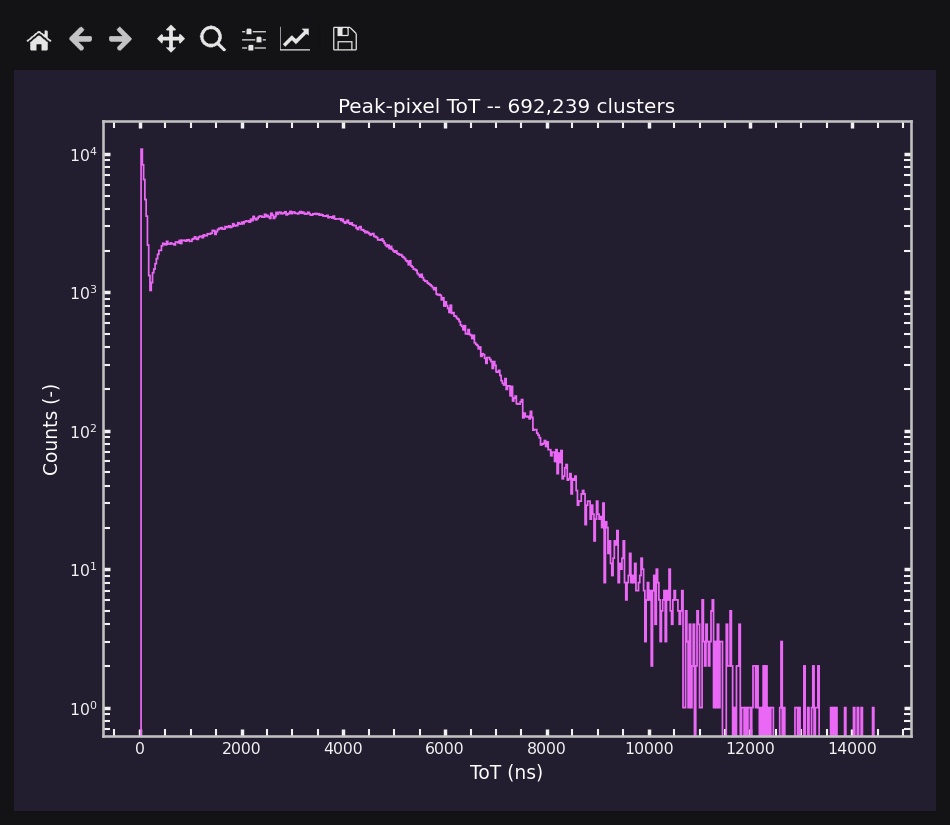
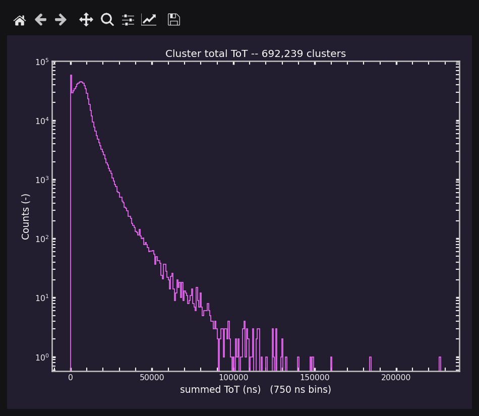
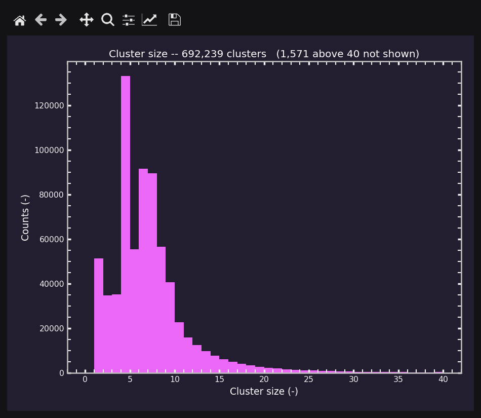

Luna Tpx3 GUI


A desktop front end for batch-processing Timepix3 .tpx3 files with ASI
Luna’s tpx3dump. Point it at one folder or twenty; it finds every .tpx3
underneath, names each output after the measurement it came from, and runs
tpx3dump over the whole lot. Without it, you type
tpx3dump process -i INPUT_NAME.tpx3 -o OUTPUT_NAME.hdf5
once per file, with the right paths, the right ASI filename and the right working directory.
Luna is not included. This project is only a graphical wrapper around ASI Luna’s
tpx3dumpcommand-line tool. It contains no part of Luna and cannot convert a single.tpx3file by itself. You need your own licensed Luna installation from ASI (Amsterdam Scientific Instruments); the GUI runs the unmodifiedtpx3dumpfrom it as a subprocess, through its documented command line interface. Every.hdf5the GUI produces is exactly whattpx3dumpwould have written had you typed the command yourself.
Who does what:
Job |
Done by |
|---|---|
Decoding |
Luna’s |
Finding the files, naming the outputs, queueing, running, logging |
this GUI |
Running the Linux-only |
this GUI |
Reading the |
this GUI (h5py; Luna is not involved) |
Built with Qt 6 (PySide6).

Quick start
Before anything else, have Luna installed (the Ubuntu build, containing
bin/tpx3dump). None of the options below provides it.
Platform |
Setup |
Launch |
|---|---|---|
Ubuntu / Linux |
|
Activities menu, or |
Windows — way 1 |
install Python, WSL + Ubuntu, then |
|
Windows — way 2 |
install Python, WSL + Ubuntu, then |
double-click the Desktop shortcut |
Any, as a package |
|
|
Windows needs WSL for every way — see below for why.
What it can do: worked examples
Every example assumes Luna is already set up (see First run).
They all use this campaign layout, which is the one ASI’s acquisition software
writes: one folder per measurement, with the metadata beside a raw/ folder
that holds the .tpx3.
D:\tpx3cam data\
data_DCR_07.08.2026\
Measurement_Aug_07_2026_12h52m45s\
measurement_metadata.json
comment.txt
raw\
fCqk_000000.tpx3
Measurement_Aug_07_2026_13h10m02s\
... raw\fDK5_000000.tpx3
Measurement_Aug_07_2026_14h31m40s\
... raw\gA7p_000000.tpx3
data_TDC_08.08.2026\
Measurement_Aug_08_2026_09h05m11s\
... raw\hQ2m_000000.tpx3
1. Process a whole campaign folder
Process tab → Add folders… → Browse… →
D:\tpx3cam data\data_DCR_07.08.2026.Leave Search subfolders ticked (it is what reaches the
.tpx3inside eachraw\) → Add to batch.Run queue.
The GUI walks the whole tree, queues every .tpx3 it finds (.TPX3 too), and
logs what it found:
Scanned 1 folder(s): 3 file(s) queued, 3 new
Files found lists each input with the output name it will get. The files
run one at a time, with tpx3dump’s own output streamed into the log. With
the default settings each .hdf5 is written next to its .tpx3, named after
the measurement rather than the ASI stem:
Measurement_Aug_07_2026_12h52m45s\raw\
fCqk_000000.tpx3
2026-08-07_12-52-45_DCR-0V-gain_fCqk_000000.hdf5
The date, time and comment come from measurement_metadata.json. See
Name templates for the other fields you can use.
2. Many folders at once
In the same Add folders… dialog, click Browse… repeatedly, or paste paths into the box, one per line. Explorer’s Copy as path, quotes and all, pastes as-is:
"D:\tpx3cam data\data_DCR_07.08.2026"
"D:\tpx3cam data\data_TDC_08.08.2026"
Scanned 2 folder(s): 4 file(s) queued, 4 new
Folders to process shows each folder with its .tpx3 count. The list is
remembered between sessions, so the next time you open the GUI the batch is
already there. A folder added twice, or a file reachable through two folders,
is queued only once. Remove on a folder drops only the files that folder
contributed; files you picked by hand with Add files… stay.
3. Keep up with a live campaign: Rescan
A measurement that is still acquiring has no measurement_metadata.json yet,
so it can only be named after its ASI stem. Suppose one appears mid-campaign:
Scanned 2 folder(s): 5 file(s) queued, 1 new
...\Measurement_Aug_08_2026_09h20m00s\raw\hZ9x_000000.hdf5
Once it finishes, press Rescan. Rescan is a full refresh: it picks up new files, drops queued rows whose input has since disappeared, and re-reads the metadata for every row:
Scanned 2 folder(s): 5 file(s) queued, 1 metadata refresh(es)
...\Measurement_Aug_08_2026_09h20m00s\raw\2026-08-08_09-20-00_laser-405nm-TDC_hZ9x_000000.hdf5
Then Run queue again. Because Skip files whose output already exists is
on by default, the files you already processed are marked
skipped - output exists and only the new one runs. Rescan, Run, repeat is
the whole routine for a running campaign. Only run a measurement once it has
finished, so tpx3dump never reads a half-written file.
Rows that are running are never touched by a rescan, because their output
path is already on the tpx3dump command line. Rows that are done or
failed are records of something that already happened, so a rescan never
deletes them.
4. Collect the outputs somewhere else
By default the outputs stay beside the raw data. The Advanced tab →
Output offers two alternatives. Both need an output folder, here
D:\processed.
Output folder (flat) puts every .hdf5 in that one folder:
D:\processed\
2026-08-07_12-52-45_DCR-0V-gain_fCqk_000000.hdf5
2026-08-07_13-10-02_DCR-0V-gain_fDK5_000000.hdf5
2026-08-07_14-31-40_DCR-50V_gA7p_000000.hdf5
2026-08-08_09-05-11_laser-405nm-TDC_hQ2m_000000.hdf5
Output folder (mirror tree) rebuilds the campaign structure under it,
dropping the raw\ level, which adds nothing once the data is processed:
D:\processed\
data_DCR_07.08.2026\
Measurement_Aug_07_2026_12h52m45s\
2026-08-07_12-52-45_DCR-0V-gain_fCqk_000000.hdf5
...
data_TDC_08.08.2026\
Measurement_Aug_08_2026_09h05m11s\
2026-08-08_09-05-11_laser-405nm-TDC_hQ2m_000000.hdf5
Missing folders are created as needed. Your .tpx3 files are never moved,
renamed or modified.
If a template makes two inputs produce the same name, both rows are marked
CLASH and skipped rather than one overwriting the other. With
{date}_{comment} in flat mode, for example, fCqk and fDK5 would both
become 2026-08-07_DCR-0V-gain.hdf5. Keep {time} or {stem} in the
template to avoid this.
5. The same tpx3dump flags for the whole batch
On Advanced → tpx3dump flags, set for example --eps-t to 100 and
tick --disable-clustering. The Process tab immediately shows an amber
line, so a non-default run is never a surprise:
Advanced: --eps-t 100, --disable-clustering
Preview commands prints the exact command line of every queued file without running anything. On Windows it reads:
wsl.exe -e /mnt/c/Luna/luna-tpx3-ubuntu/bin/tpx3dump process -i '/mnt/d/tpx3cam data/data_DCR_07.08.2026/Measurement_Aug_07_2026_12h52m45s/raw/fCqk_000000.tpx3' -o '/mnt/d/tpx3cam data/data_DCR_07.08.2026/Measurement_Aug_07_2026_12h52m45s/raw/2026-08-07_12-52-45_DCR-0V-gain_fCqk_000000.hdf5' --eps-t 100 --disable-clustering
Any flag without its own control goes in extra arguments. Check install
prints tpx3dump process --help, the authoritative list for your Luna version.
6. Redo some files, not all
When outputs already exist, Run queue skips them. To redo particular
files, tick Overwrite on their rows in Files found. The checkbox in the
column header ticks or clears every row whose output exists. Untick Skip
files whose output already exists on the Advanced tab to overwrite
everything; the amber line then says OVERWRITING existing output.
7. Build the batch on Windows, run it on a Linux machine
For a long campaign, you may prefer to run on a Linux workstation or server. Build the queue as usual, then Advanced → Export .sh. You get a self-contained script with your paths translated, your flags applied, and the input and output roots pulled out into variables to edit on the other machine:
#!/usr/bin/env bash
# Generated by Luna Tpx3 GUI (Qt) -- run this on the Linux machine.
#
# 1. Put the Luna bin/ directory on PATH, or set TPX3DUMP below
# to the absolute path of the tpx3dump executable.
# 2. Edit IN_ROOT / OUT_ROOT to match where the data lives there.
set -euo pipefail
TPX3DUMP=${TPX3DUMP:-tpx3dump}
IN_ROOT='/mnt/d/tpx3cam data'
OUT_ROOT=/mnt/d/processed
mkdir -p "$(dirname "$OUT_ROOT"/data_DCR_07.08.2026/Measurement_Aug_07_2026_12h52m45s/2026-08-07_12-52-45_DCR-0V-gain_fCqk_000000.hdf5)"
"$TPX3DUMP" process -i "$IN_ROOT"/data_DCR_07.08.2026/Measurement_Aug_07_2026_12h52m45s/raw/fCqk_000000.tpx3 -o "$OUT_ROOT"/data_DCR_07.08.2026/Measurement_Aug_07_2026_12h52m45s/2026-08-07_12-52-45_DCR-0V-gain_fCqk_000000.hdf5 --eps-t 100 --disable-clustering
...
This works even where tpx3dump cannot run, for example on a Windows PC
without WSL.
8. TDC columns on every output
Advanced → After processing → tick Add TDC columns to each output
.hdf5 and pick the reference edge. After tpx3dump finishes each file, the
GUI tags every pixel hit and cluster with the TDC edge it follows, in the same
batch. The row’s note then reads, for example, 412.0 MB in 38.2s, TDC TDC1Rising (1,204,733 rows). See TDC for what is written and how to
read it back.
Requirements
Python 3.9+
PySide6 >= 6.5 required
h5py, numpy optional -- Inspect tab, TDC columns
pandas optional -- the TDC frame preview
matplotlib optional -- the six plots
komorebi_mpl optional -- plot styles (falls back to the app palette)
pip install -r requirements.txt covers all of it; so does
pip install -e ".[analysis]", which also installs the app itself — see
Installing from source.
Linux
Follow these in order. Steps 1 and 2 are what people usually skip, and skipping them gives you a launcher that installs cleanly and then does nothing when clicked.
1. System packages
sudo apt install python3 python3-venv libxcb-cursor0 desktop-file-utils
libxcb-cursor0— Qt 6.5+ will not open a window without it, and Qt’s own error message (“could not load the Qt platform plugin xcb”) does not name the package. On a bare install you may also needlibxkbcommon-x11-0andlibegl1.desktop-file-utils— providesdesktop-file-validate, which is how you check the menu entry in step 4. Not strictly required, but without it a malformed entry fails silently.
2. Install the launcher
From inside the GUI folder:
chmod +x run_gui.sh install-linux.sh
./install-linux.sh
With no flags that is the full install, which is what a fresh machine needs:
a private venv with everything in
requirements.txt(PySide6, h5py, numpy, pandas, matplotlib, komorebi_mpl), whichrun_gui.shthen finds on its own;the Activities-menu launcher;
a double-clickable icon on the Desktop.
Everything lands under $HOME; no root, nothing system-wide.
Flag |
Effect |
|---|---|
(none) |
venv + menu launcher + Desktop icon |
|
skip the venv (~450 MB, at |
|
skip the icon on the Desktop; the menu launcher is still installed |
|
remove the launcher, icon and desktop shortcut. Leaves the GUI’s own files and the venv alone. |
--with-venv and --desktop-icon from older instructions are still accepted;
both are now the default.
Re-running is safe; it overwrites the entry. If you move the folder, run it again so the launcher points at the new path.
3. Check it runs at all
Before worrying about the menu, prove the app itself starts:
./run_gui.sh
If a window opens, the launcher problem is purely a menu problem. If it does
not, you are missing PySide6 or libxcb-cursor0 — run_gui.sh says which, in
a dialog if it can and on stderr regardless.
run_gui.sh picks its interpreter in this order: $PYTHON, a .venv beside
the script, the venv install-linux.sh built, then the system python3.
5. Point it at Luna
On Linux the Luna binary runs directly — backend native, nothing else to set
up. Make sure it is executable:
chmod +x /path/to/luna-tpx3-.../bin/tpx3dump
Then in the GUI: Advanced tab → browse to the folder containing
bin/tpx3dump → Check install.
Windows
How it works, and why WSL
The Luna download is the Ubuntu build. Its binaries are Linux ELF executables:
bin/tpx3dump: ELF 64-bit LSB executable, x86-64,
interpreter /lib64/ld-linux-x86-64.so.2
Windows cannot run that. So the split is:
The GUI runs natively on Windows, as a normal Python/Qt app.
tpx3dumpruns inside WSL, launched aswsl.exe -e /mnt/c/..., with Windows paths translated to/mnt/<drive>/...automatically.
You never open the Ubuntu shell yourself. The GUI drives it.
Without WSL the GUI still starts and everything except running works — build the queue, preview the commands, Export .sh to run on an Ubuntu box.
Step 1 — Python
Install Python 3.9 or newer from python.org,
keeping the py launcher option ticked. That is all you install by hand:
.\install-windows.ps1 (Way 2) builds a
private venv at %USERPROFILE%\venvs\luna-tpx3-gui with everything in
requirements.txt, and run_gui.bat (Way 1) uses that same venv.
To use an interpreter of your own instead, install the dependencies into it:
py -3 -m pip install -r requirements.txt
py -3 -c "import PySide6, h5py, numpy, matplotlib; print('ok')"
Step 2 — install WSL and Ubuntu
In PowerShell (no administrator rights needed with current WSL):
wsl --install -d Ubuntu
It downloads ~500 MB and then asks for a UNIX username and password. These are new credentials for the Linux system, unrelated to your Windows account. On older Windows builds WSL may ask for a reboot; current ones do not.
Ubuntu gives you the newest LTS. Luna is built for Ubuntu 20.04, which
Microsoft no longer offers, but that is fine: tpx3dump links only against
core glibc and libgcc —
libgcc_s.so.1 libpthread.so.0 libm.so.6 libdl.so.2 libc.so.6
— and glibc is forward-compatible, so a 20.04 build runs unchanged on 24.04.
No extra apt install is needed. If you would rather stay close to the
build target, wsl --install -d Ubuntu-22.04 also works.
Step 3 — check the installation
Three checks, each answering a different question.
Is a distribution installed and running?
wsl --list --verbose
NAME STATE VERSION
* Ubuntu Running 2
Can WSL execute the Luna binary? Give it the /mnt/... form of your own
Luna path:
wsl -e /mnt/c/Users/<you>/path/to/luna-tpx3-.../bin/tpx3dump --version
Tpx3Dump 0.3.2
If that prints a version, the backend works. No chmod +x is needed — /mnt/c
is mounted with everything executable.
Can WSL see your data? For data on D::
wsl -e ls "/mnt/d/tpx3cam data"
WSL auto-mounts fixed disks only. A USB stick, card reader or other
removable drive never appears under /mnt, so tpx3dump cannot open anything
stored on it – it logs Skipping file ... as it does not have "Tpx3" extension and is not a directory and then panics with index out of bounds: the len is 0.
The GUI checks for this before a run and offers to mount the drive for you; the
equivalent by hand, for E:, is
wsl -u root -e bash -c "mkdir -p /mnt/e && mount -t drvfs E: /mnt/e"
No password is needed, and the mount lasts until WSL next shuts down.
From inside the GUI: Advanced tab → Check install. It re-detects the
backend, then runs tpx3dump --version and tpx3dump process --help and dumps
both into the log. No restart is needed after installing WSL.
A correct setup looks like this — the folder pointing at bin/, and a green
OK line naming the backend and the translated /mnt/c/... path:

If that line is amber or red it says why: no Luna folder set, no tpx3dump
under it, or no WSL distribution installed. The Process tab then reads
“Ready - tpx3dump runs through WSL.”
Way 1 — run it from PowerShell
cd "C:\path\to\Luna Tpx3 GUI"
.\run_gui.bat
or, from anywhere, in one line:
& "C:\path\to\Luna Tpx3 GUI\run_gui.bat"
The & is PowerShell’s call operator, needed whenever the command is a quoted
string. The .bat picks its interpreter in this order: %LUNA_PYTHON%, a
.venv beside it, the venv install-windows.ps1 builds
(%USERPROFILE%\venvs\luna-tpx3-gui), %USERPROFILE%\venvs\tpx4cam, then
py -3. If you gave the installer a different -VenvName, point
LUNA_PYTHON at that venv’s python.exe.
It uses python.exe deliberately, so a startup error stays readable in the
console. Do not close that console while the GUI is running — it kills the GUI.
Way 2 — double-click, no terminal
.\install-windows.ps1
That builds a private venv with everything in requirements.txt at
C:\Users\<you>\venvs\luna-tpx3-gui (~450 MB), then creates a Luna Tpx3
GUI shortcut on your Desktop. Double-click it and the app starts — no
PowerShell, no cd, no console window, and WSL still gets driven underneath
exactly as before. No administrator rights are needed.
Flag |
Effect |
|---|---|
(none) |
venv + Desktop shortcut |
|
also add it to the Start Menu, so it is searchable |
|
build the venv at |
|
skip the venv and use a Python that already has PySide6 (an earlier venv, |
|
use this specific |
|
remove the shortcuts. Leaves the GUI’s own files and the venv alone. |
What it does: builds the venv from whichever Python 3.9+ the py launcher
finds (re-running reuses it and brings its packages up to date), checks that
the interpreter can actually import PySide6 — this matters, since
pythonw.exe has no console and an import error would be silent — and writes
a .lnk pointing at the venv’s pythonw.exe. Right-click the shortcut →
Pin to taskbar if you want it permanently to hand.
After updating the GUI (a new release, or git pull), re-run
.\install-windows.ps1 if requirements.txt changed; otherwise the shortcut
already runs the new code.
There is deliberately no standalone .exe — see the
Licence note.
First run
Open the Advanced tab (or press Set up Luna… on the Process tab) and browse to the folder containing
bin/tpx3dump— either the install root or thebinfolder itself works. It is remembered, so this is a one-time step.Check install proves the backend works and prints the authoritative flag list for the extra arguments box.
Back on Process, the status line reads Ready and the setup button disappears. From then on you never need the Advanced tab again.
Everything on the Advanced tab is optional — this is what it looks like once Luna is configured:

Layout
Tab |
What it is for |
|---|---|
Process |
The whole everyday job: add input, press Run, watch the log. Deliberately has nothing else on it. |
Advanced |
Luna folder, output placement, renaming, |
Inspect HDF5 |
Look inside a result — datasets, counts, ToA range, TDC edges, six plots, and the button that writes the TDC columns. See below. |
Left alone, the Process tab runs exactly
tpx3dump process -i NAME.tpx3 -o NAME.hdf5
per queued file, writing the .hdf5 next to its .tpx3. Any deviation raises
an amber summary line on the Process tab — relocation, renaming, overwriting,
and every flag passed. Silently renamed or relocated output is the one surprise
worth never having.
Folder scanning, Rescan, output placement and the rest are walked through in What it can do.
Theme is a Light/Dark pair of buttons in the header, remembered between runs.
Name templates
Default is {date}_{time}_{comment}_{stem}, built from
measurement_metadata.json and comment.txt in the measurement folder:
2026-08-07_12-52-45_DCR-0V-gain_fCqk_000000.hdf5
The time is in there because a campaign routinely puts many measurements in one
day under the same comment — on 2026-08-07 alone, fCqk_000000 and
fDK5_000000 are both DCR-0V-gain, and without {time} the only thing
telling them apart is the ASI stem. {time} is written 12-52-45, not
12:52:45, because a colon is not legal in a Windows filename.
Changing this default migrates an existing config only if its template is still one this program shipped as a default. A template you chose yourself is never overwritten.
Placeholder |
Example |
Source |
|---|---|---|
|
|
filename |
|
|
folder |
|
|
folder |
|
|
|
|
|
Stop − Start |
|
|
|
|
|
|
|
|
metadata |
|
|
metadata |
|
|
metadata |
|
|
|
Placeholders with no value drop out and the separators collapse. If two inputs
would produce the same output name, both rows are marked CLASH and skipped —
a rename tool that silently overwrites half your batch is worse than none.
The six plots

All six read the HDF5 in slices, so multi-GB files do not exhaust memory, and each opens in its own modeless window — several can be compared side by side.
Plot |
Source |
Binning / scale |
|---|---|---|
Hitmap, pixels |
|
counts per pixel |
Hitmap, clusters |
|
cluster centroids per pixel |
ToT, peak pixel |
|
25 ns bins, step outline, log y |
ToT, cluster total |
|
~300 bins snapped to 25 ns ticks, log y |
Cluster size histogram |
|
40 bins over 0–40, linear y |
Time since TDC edge |
|
200 bins over one trigger period, log y |
ctot is the peak pixel, not the cluster total
Worth knowing before reading either ToT plot. Checked against PixelHits for
every one of the 692,239 clusters in the reference file, with no exceptions:
Field |
What it actually holds |
|---|---|
|
|
|
|
|
number of hits in the cluster |
The giveaway is that ctot saturates at 14 425 ns, exactly the single-pixel
tot maximum. Plotted against cluster size the two behave quite differently:
Pearson r |
median at size 1 |
median at size 40 |
|
|---|---|---|---|
|
0.775 |
100 ns |
6 775 ns |
|
0.954 |
100 ns |
43 450 ns |
ctot climbs steeply to about size 9 and then flattens — beyond that, extra
charge spreads into more pixels rather than driving the central one higher, so
the peak pixel saturates. sum_tot stays linear the whole way, as a
deposited-charge proxy should.
Use cluster total for deposited charge, peak pixel for threshold and gain studies where the saturation is the point.
 |
 |
 |
 |
 |
The two hitmaps answer different questions and are worth comparing: the pixel map shows the raw illumination including cluster spread, while the cluster map counts each event once at its centroid and so comes out visibly flatter.
The cluster size histogram is capped at 40 pixels because that is where the distribution lives; anything above is counted and stated in the plot title rather than dropped without saying so.
TDC
tpx3dump records every TDC edge it saw in /TDCEvents:
Field |
|
|---|---|
|
|
|
the trigger counter that came with the edge |
|
100 fs ticks — the same clock as |
Two things about that dataset are easy to get wrong, so the GUI handles both.
Every chip repeats the packet. A quad carries each physical edge four times
and an octal eight, so a 40-row /TDCEvents in a quad file describes ten
triggers, not forty. Everything here deduplicates on (tdc_type, timestamp)
first — the same thing ASI’s read_tdcs.py does. The Inspect summary reports
both numbers so the difference is never a surprise:
TDC 10 edge(s) (40 raw records; every chip repeats the packet)
5 TDC1Rising, 5 TDC1Falling
TDC1Rising 5 edges, period 100.410 us (+- 0.0 ns)
TDC1Falling 5 edges, period 100.410 us (+- 0.3 ns)
span 0.453 ms
The timestamps share the hit clock, which is what makes “which trigger does this cluster belong to” a subtraction rather than a guess.
The tdc column
Inspect HDF5 → Add TDC columns to this file tags every pixel hit and every
cluster with the TDC edge it follows, and writes the result back into the same
.hdf5. On the Advanced tab, Add TDC columns to each output .hdf5 does it
automatically for every file the batch produces.
The columns land in two new datasets, /PixelHitsTDC and /ClustersTDC, each
row-aligned 1:1 with the dataset it describes:
Column |
|
|---|---|
|
timestamp of the reference edge this row follows, in 100 fs ticks |
|
|
|
row in the deduplicated TDC table |
|
that edge’s |
|
|
Rows that arrive before the first reference edge have nothing to measure
from and carry -1, which is the sentinel tpx3dump itself uses in
PixelHits/tof.
PixelHits, Clusters and TDCEvents are never rewritten. An HDF5 compound
dataset has a fixed dtype, so a genuine extra field would mean recreating the
whole thing — and these files are the only copy of the measurement. Writing
beside them is additive and reversible; the GUI also stamps what it wrote and
refuses to replace a /ClustersTDC it did not write itself.
Cost is small: the columns are chunked and gzipped, and since tdc and
tdc_trigger are constant across a whole trigger’s worth of rows they
compress well — on the ASI example file the stored columns come to 3.5 bytes
per pixel hit and 4.0 per cluster, against 23 uncompressed.
Reading it back
Preview frame shows the first 40 rows of what you get. From Python, the
package is importable and the three functions take no Qt (importing
luna_tpx3_gui does not load PySide6 at all):
import luna_tpx3_gui as g
g.read_tdcs("run.hdf5") # the edges, deduplicated
g.add_tdc_columns("run.hdf5", "TDC1Rising")
df = g.read_with_tdc("run.hdf5", "Clusters")
read_with_tdc returns one DataFrame — the cluster (or hit) fields plus the
TDC columns, with tdc_type decoded to its name and tdc_dt_s added in
seconds:
id size ctoa sum_tot ctot cx cy tdc tdc_dt tdc_index tdc_trigger tdc_type tdc_dt_s
397 397 1 5200125000 1000 1000 147 238 5199888020 236980 0 11 TDC1Rising 2.369800e-08
398 398 1 5200218750 950 950 224 280 5199888020 330730 0 11 TDC1Rising 3.307300e-08
It uses the stored dataset when one is there and computes the tagging on the
fly when it is not, so it works on a file straight out of tpx3dump. Passing
reference= forces the on-the-fly path, which is how you look at a different
edge without rewriting the file.
Reference edge
The TDC reference setting — the same control on both tabs — picks which
edge starts the clock, with Any edge tagging from the most recent edge of any
type. It is independent of tpx3dump’s own --tof-tdc-reference: that flag
makes tpx3dump fill PixelHits/tof during processing, whereas these columns
are computed afterwards and can be recomputed against a different edge whenever
you like, without reprocessing the .tpx3.
Where the two overlap they agree exactly. On the ASI example file, with
--tof-tdc-reference TDC1Rising passed and TDC1Rising chosen here,
tdc_dt == tof for all 25 762 tagged hits, and both mark the same 667 rows
unset.
Plot styling
The plots follow the app theme using two style sheets from komorebi_mpl:
App theme |
Style |
Colormap |
|---|---|---|
Dark |
|
plasma |
Light |
|
cividis |
pip install komorebi_mpl (it is in requirements.txt). It is optional — if it
is not installed the plots colour themselves from the app palette exactly as
before, so nothing breaks.
Installing from source
A fresh virtual environment is recommended:
git clone https://github.com/rngKomorebi/Luna-Tpx3-GUI
cd Luna-Tpx3-GUI
python -m venv .venv
# Windows: .venv\Scripts\activate
# Linux: source .venv/bin/activate
pip install -e ".[analysis]"
Then any of these starts the GUI:
luna-tpx3-gui # console script installed by pip
python -m luna_tpx3_gui
python src/main.py # works without installing, given the dependencies
pip install -e . without the [analysis] extra installs PySide6 only —
enough to build and run batches, but the Inspect tab stays inert. run_gui.bat
and run_gui.sh pick up a .venv beside them automatically.
Project layout
src/
main.py direct-run entry point; what the launchers start
luna_tpx3_gui/
functions/ Qt-free core -- importable without PySide6
backend.py native / WSL detection, path translation, drive mounts
naming.py metadata -> name templates, the Job record
tdc.py /TDCEvents dedup, TDC columns, read_with_tdc()
config.py ~/.luna_tpx3_gui_qt.json
plotting.py plot constants, komorebi_mpl styling
common.py app identity, icon path
gui/ the Qt application
main_window.py Process, Advanced and Inspect HDF5 tabs
models.py, widgets.py, style.py
icon/ app icon
tests/ pytest suite for the Qt-free core
docs/ screenshots, and the Sphinx site built by CI
Settings
~/.luna_tpx3_gui_qt.json — Luna path, folder list, template, flags, TDC
reference, theme.
On Windows that is C:\Users\<you>\.luna_tpx3_gui_qt.json.
Troubleshooting
Symptom |
Cause and fix |
|---|---|
Status reads |
|
|
Point at the install root or its |
UNC path rejected |
Map |
Qt plugin |
|
Launcher installed but not in the applications menu (Linux) |
Work through Linux step 4 — start with |
Generic gear instead of the app icon in the dock (Linux) |
The window must be matched to its |
Menu entry appears but clicking it does nothing (Linux) |
PySide6 or |
Inspect tab inert |
|
“No |
The file predates |
“No TDC1Rising edges in this file” |
That reference was never pulsed — the summary line lists which types the file does have. |
Most rows report no TDC |
They precede the first reference edge. Normal at the start of a run; the plot title and the write dialog both state how many. |
|
Something other than this GUI wrote that name. Rename or remove it yourself — the GUI will not overwrite what it did not write. |
Window opens taller than the screen |
Fixed — the window now clamps itself to the work area on first show. |
Batch is slow on Windows |
|
|
WSL cannot see the drive the data is on – normal for USB sticks and other removable disks. Answer Yes when the GUI offers to mount it, or see Can WSL see your data? above. |
Files report |
That is the Skip files whose output already exists option. Tick Overwrite on the rows you want redone, or use the checkbox in that column’s header to tick them all. |
Licence note
This program is a wrapper only. It does not contain, modify, decompile or
redistribute any part of Luna. It runs the unmodified tpx3dump executable as
a subprocess through its documented command line interface, and you point it
at your own Luna installation.
For the same reason there is no bundled executable — no PyInstaller
.exe, no AppImage, no release downloads — on any platform. A self-contained
bundle makes it too easy to pass the GUI on with the Luna binaries packed
inside it, which would break Luna’s licence. The GUI runs from source, through
the launchers and shortcuts described above. Do not bundle the Luna
binaries with this GUI if you pass it on.
Contributing
Two branches: main (stable) and develop
(active development). Fork, work on a branch off develop, and open a pull
request against it. pytest tests/ runs the test suite, which needs no
display. See CONTRIBUTING.md.
License and contact
MIT — see LICENSE. This covers the GUI only; ASI Luna is licensed separately by its vendor.
Sergei Kulkov — sergei.kulkov@fjfi.cvut.cz. Bugs and feature requests: GitHub issues.